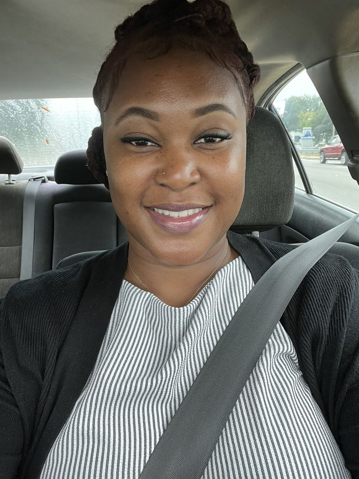
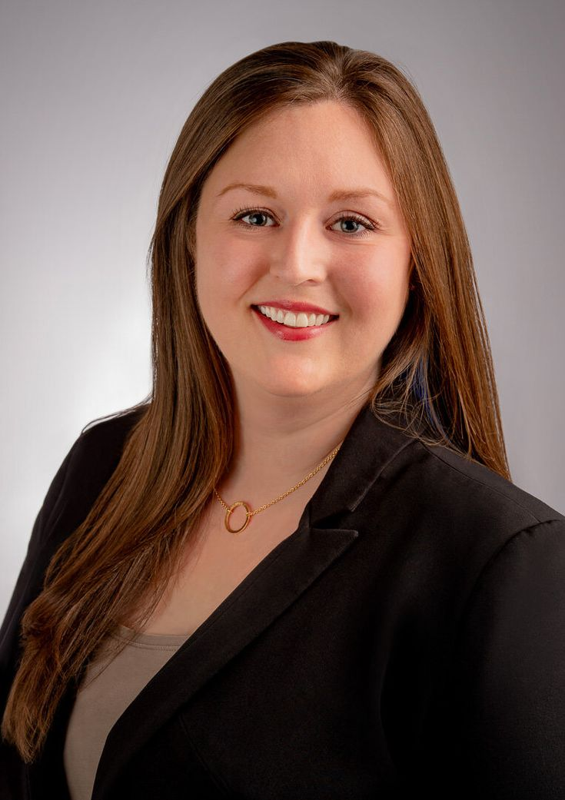
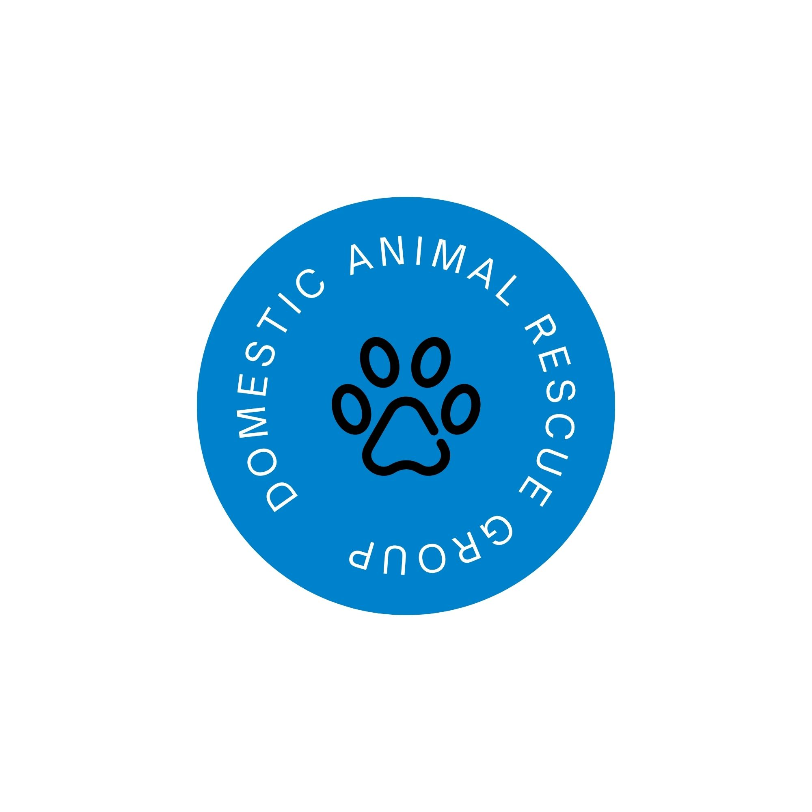

Meet Our Team

Emily Brown
Animal Care Manager

Micheal Williams
Animal Care Worker

Sarah Smith
Animal Care Worker
Vanessa Johnson
Adoption Coordination
Jessica Adams
Volunteer Coordination

Domestic Animal Rescure Group(DARG) is a pro-quality, non-profit organisation that rescutes, cares for,sterilises and re-homes previously abused, neglected and abandoned cats and dogs. DARG provides a cruical service for the lower-income communities of Imizamo Yethu, Hangberg and the greater Hout Bay area.
Suited on a large plot of Hout Bay, Western Cape, DARG provides shelter for its rescues through houseing and extensive cat garden, cat sancturay, outdoor and indoor kennel areas as well as indoor rooms for thoes animals in treatment or rehabilitation.DARG relies on the genorasity and support through donations.
Our mission is to care for and din loving homes for animals in need. Rescuing, sterilising, rehoming and caring for previously abused, neglected and abandoned cats and dogs. We work to give animals a safe and happy life.
For all adoptable animals at DARG to find a loving home and to ensure the well-being of all companion animals.

Animal Care Manager
Animal Care Worker

Animal Care Worker
Adoption Coordination
Volunteer Coordination